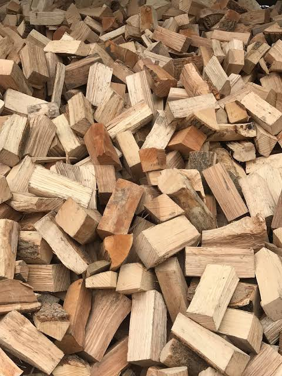

Kiln Dried Logs
Quality firewood for stoves and open fires. Call for our current price list.
Call for price list →Kiln Dried Logs · Delivery Available
Stock up for your stove or open fire with kiln dried logs from TB Sweeps. Delivery is available across Manchester, Tameside and surrounding areas.

Warmth starts with good fuel
We're now offering kiln dried logs with delivery available to local customers across Manchester, Tameside and surrounding areas.
Whether you're topping up your log store or getting ready for the colder months, give TB Sweeps a call for our current price list and delivery options.
Log delivery
Contact us for the current price list, available quantities and delivery details for your area.
Quality firewood for stoves and open fires. Call for our current price list.
Call for price list →Local delivery available across Manchester, Tameside and surrounding areas. Ask us about delivery to your postcode.
Ask about delivery →TB Sweeps
Good logs. Better fires. A warmer home.
Order your logs
Ask about current availability, quantities and delivery.